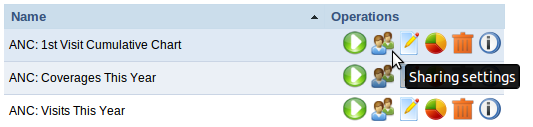
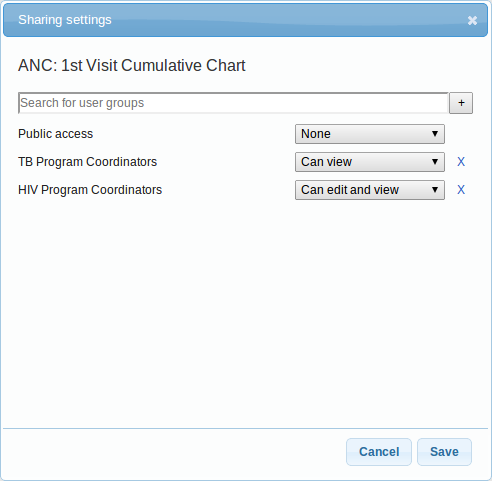

Table of Contents
This chapter discusses the sharing of entities feature in DHIS 2.
A large part of the objects in DHIS 2, like reports, charts, maps and indicators, can be shared. Sharing means making an object, like a report, available for reading or modification to a group of users or to everyone. For instance for reports, the sharing dialog can be opened by clicking on the "Sharing settings" button next to each report in the list.
|  |
Clicking on the "Sharing settings" button will open the sharing dialog. The sharing dialog is where sharing is controlled.
|  |
You can share your report with everyone or with a number of user groups. Next to "Public access" you can choose your public access option: "None", "Can view" or "Can edit and view". Edit also implies deleting the report. To share with a group, simply start typing the name of the group and the "Search for user groups" input field and select your desired group. Click on the "+" icon next to the input field to share with that group. For each group you can set an access option, similar to public access.
Sharing with a user group implies that all users in that group will get access to the shared object. To create a user group you can go to the dashboard module and click on "Groups" on the front page. This will lead you to the list of groups where you can click "Add new" in the top right corner. Creating user groups is open for everyone from the dashboard module.